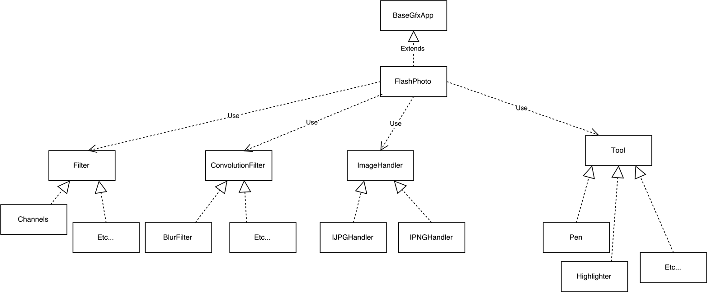

To complete the FlashPhoto and Mia applications, we had to implement many tools, filters, and functions. To make this process easier, we used the bridge design pattern, first making general Tool, Filter, ConvolutionFilter, and ImageHandler classes, and then making specific classes that implement the generic methods in more specific ways.
For tools, this meant defining the specific effect they have when dragged on the canvas. The mask member variable of the Tool class could be designed to form a variety of shapes, given that it was a 2-D array of Floating point values. These floating values represented the opacity of the Tool. Each Tool had a different mask and therefore applied differently to the canvas.
For filters, how the filters applied to the canvas was different depending upon the filter’s structure. The classes that inherited from the Filter class adjusted each Pixel on the canvas individually, and thus just needed to iterate over the PixelBuffer’s 2D array and apply it’s methods to each Pixel. The classes that inherited from the ConvolutionFilter class affected the pixels differently. They had a member variable called a Kernel that was a 2-D array of floating point values. The values in the kernel represented the amount that each pixel’s values would affect the the center pixel’s values. The kernel was applied to a temporary buffer using the display buffer values as reference. Then, it replaced the display buffer.
ImageHandlers load images differently depending upon the type of image that is selected. The ImageHandler class determines the image type, and then calls either IPNGHandler or IJPGHandler to load the image correctly.
Not pictured in the UML diagram is the Undo and Redo classes, which are responsible for storing the state of the PixelBuffer before changes are made, thus allowing the user to go back and forth between their edits of the buffer.
The structure of Mia is essentially the same as FlashPhoto, except with fewer classes due to its more focused design and purpose.
